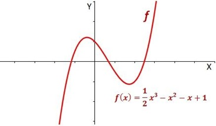
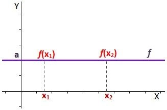
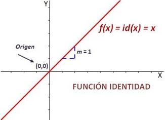
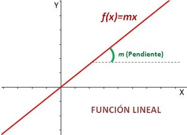
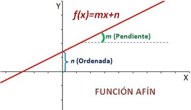
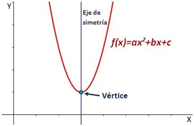
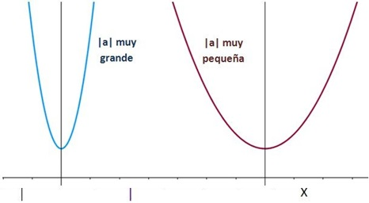
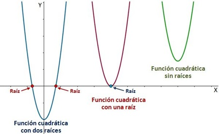

Una función polinómica es aquella que tiene por expresión un polinomio. En general, suelen estudiarse según el grado del polinomio.
El dominio de las funciones polinómicas son todos los números reales.
Las
funciones polinómicas son continuas en todo su dominio.

Se clasifican en:
Función constante
Una función constante ƒ es una función tal que la variable dependiente y toma el mismo valor a para cualquier elemento del dominio (variable independiente x).
En términos matemáticos, la función ƒ es constante
si para cualquier par de puntos x1 y x2 del dominio tales que x1 < x2, se cumple que ƒ(x1) = ƒ(x2).
La gráfica de una función constante es una recta
paralela al eje de abscisas X.
También se puede definir una función constante a partir de la derivada. Una función ƒ será constante si para todo punto x del dominio la derivada es nula, es decir ƒ'(x)
= 0.

Funciónes de Primer Grado
Son funciones que están compuestas por un escalar que multiplica a la variable independiente más una constante. Su mayor exponente es x elevado a 1.
Su representación gráfica es una recta de pendiente m.
La
m es la pendiente y la n la ordenada, o punto en donde corta la recta ƒ al eje de ordenadas. Según los valores de m y n existen tres tipos:
Función Identidad:
La identidad es una función lineal de pendiente m = 1 que pasa por el origen de coordenadas, es decir, por el punto (0,0). Divide el primer y el tercer cuadrante en partes iguales, o sea,
es su bisectriz.
La pendiente es la inclinación con respecto al eje X (eje de abscisas). Al ser ésta positiva (m > 0), la función es creciente.
Que la pendiente de la función identidad sea m = 1 significa que, si aumentamos la x en una unidad, la y también aumenta en una unidad.
Formará un ángulo de 45° con cualquiera de los ejes.

Función Lineal:
Una función lineal es una función polinómica de grado 1 que pasa por el origen de coordenadas, es decir, por el punto (0,0). Son funciones rectas de la forma:
ƒ(𝓍) = 𝓂𝓍
La 𝓂 es la pendiente de la recta.
La pendiente es la inclinación con respecto al eje "X" (eje de abscisas). Si 𝓂 es positiva (𝓂 > 0), entonces la función es creciente. En
cambio, si la 𝓂 es negativa (m < 0), entonces la función es decreciente.
La pendiente 𝓂 significa que, si aumentamos la x en una unidad, la y aumenta en 𝓂 unidades. Si la 𝓂 es positiva,
según aumente la x la y también irá aumentando (función creciente). En cambio, si 𝓂 es negativa, cuando aumenta la x la y disminuirá (función decreciente).

Función Afín:
Una función afín es una función polinómica de grado 1 que no pasa por el origen de coordenadas, o sea, por el punto (0,0).
Las funciones afines son rectas definidas por la siguiente
fórmula
ƒ(𝓍) = 𝓂𝓍 + 𝓃
Donde: 𝓂 y 𝓃 son diferentes de cero.
La 𝓂 es la pendiente de la recta.
La pendiente es la inclinación con respecto al eje "X" (eje de abscisas). Si 𝓂 es positiva
(𝓂 > 0), entonces la función es creciente. En cambio, si la 𝓂 es negativa (m < 0), entonces la función es decreciente.
La pendiente 𝓂 significa que, si aumentamos la x en una unidad,
la y aumenta en 𝓂 unidades. Si la 𝓂 es positiva, según aumente la x la y también irá aumentando (función creciente). En cambio, si 𝓂 es negativa, cuando aumenta la x la y disminuirá (función decreciente).
La ordenada en el orígen es la 𝓃, es decir el punto donde la recta corta el eje de ordenadas. Las coordenadas de este punto son (0 , 𝓃).

Función Cuadrática
Una función cuadrática (o función de segundo grado es una función polinómica de grado 2, es decir el mayor exponente del polinomio 𝓍 elevado a 2 ( 𝓍 2):
ƒ(𝓍) = a𝓍 2 + b𝓍 + c. Siendo a ≠ 0
Existen dos elementos fundamentales en la parábola que definen como es esta:
El eje de simetría, que es una recta que parte de la parábola en dos ramas iguales.
El vértice: es el punto de intersección de la parábola con el eje de simetría.

Si a > 0, la parábola se abre hacia arriba y el vértice es el mínimo de la funcióm. En cambio si a < 0,
la parábola se abre hacia abajo y el vértice es el máximo de la función.
Cuanto mayor se el valor absoluto de a, ∣𝒶∣, más juntas estarán las ramas de la parábola.

Una función cuadrática puede tener dos, una o ninguna raiz. Las raíces de una función son los elementos del
dominiotal que su imágen es nula ƒ(𝓍) = 0.

Función Cúbica
Una función cúbica (o función de tercer grado es una función polinómica de grado 3, es decir el mayor exponente del polinomio 𝓍 elevado a 3 ( 𝓍 3):
ƒ(𝓍) = a𝓍 3 + b𝓍 2 + c𝓍 + d. Siendo a ≠ 0
Una función cúbica puede tener tres, dos o una raíz. Las raíces de una función son los elementos del dominio tal que su imagen es nula (ƒ(𝓍) = 0).